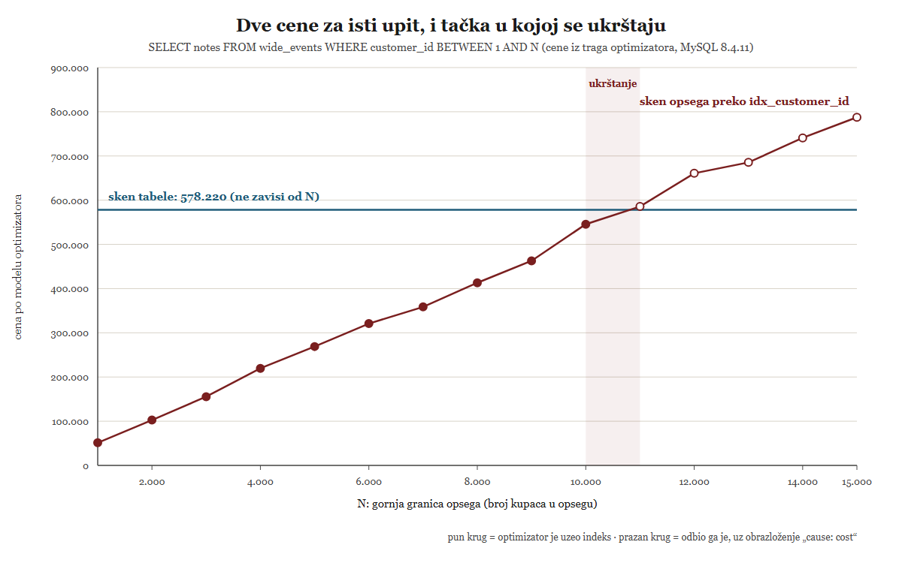
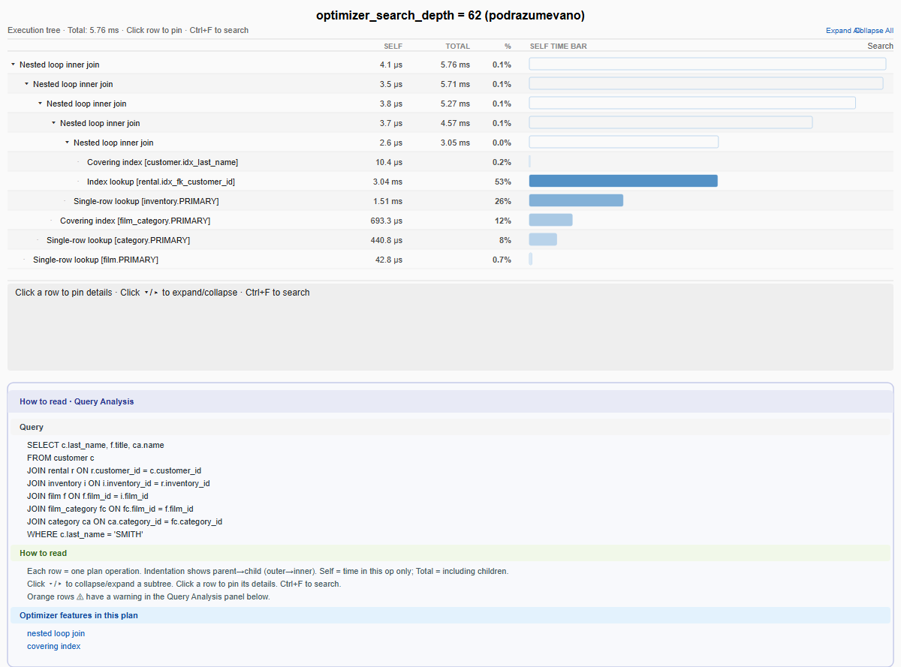
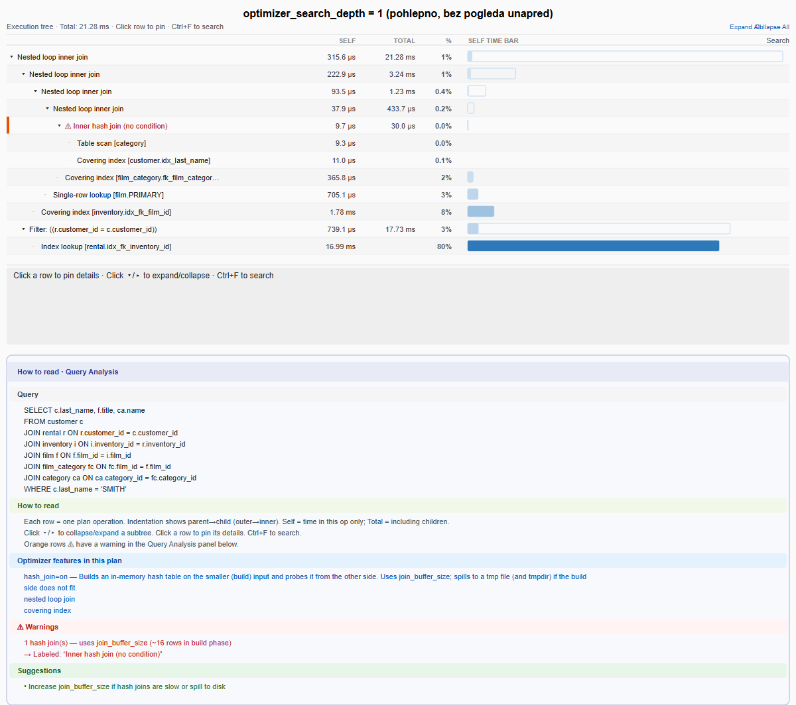

![Dijagram: pet faza obrade upita kao cevovod odozgo nadole. Parser, pa Razrešavanje
(plava traka, obeleženo kao BEZ CENE, trajne transformacije). Isprekidana crvena linija
sa etiketom GRANICA CENE deli dijagram: od nje nadalje svaka odluka ima cenu. Ispod
granice, veliki okvir Optimizator (crvena traka) sadrži unutar sebe manji isprekidani
okvir Planer, obeležen kao njegova podfaza. Na dnu je Izvršilac. Desno od cevovoda,
uglaste zagrade pokazuju koji deo cevovoda pokriva svaki od tri koraka u
optimizer_trace: join_preparation pored Razrešavanja, join_optimization pored celog
okvira Optimizator+Planer, join_execution pored Izvršioca; napomena da parser nije u
tragu.](../figures/03-od-sql-a-do-plana-04-pet-faza-pregled.svg)
optimizer_trace iz probe gore.Lekcija 03 · Poglavlje 3 (Od SQL-a do plana izvršavanja)
Poglavlje 2 je pokazalo gde se obrada upita odvija. Ovo poglavlje pokazuje šta se u njoj odlučuje, kojim redom, i po kom kriterijumu: sve odluke koje uopšte imaju alternativu razrešavaju se jednim brojem, cenom.
U Lekciji 02 put naredbe bio je izložen samo u grubim crtama, da bi se videlo gde je šav prema motoru. Sada se isti put gleda izbliza, i to samo njegov srednji deo: koraci 3, 4 i 5. MySQL obradu deli na pet imenovanih faza, i svaka od njih ima svoj fajl i svoju ulaznu funkciju u izvornom kodu.
parse_sql(), gramatika u sql_yacc.yy
Tekst naredbe postaje stablo raščlanjivanja (parse tree, AST).
Isključivo gramatika: parser ne zna nijedno ime iz baze.Query_block::prepare(), sql_resolver.cc
Imena tabela i kolona traže se u rečniku podataka, i tu se rade
trajne transformacije stabla. Ovo je faza koja najviše iznenađuje.JOIN::optimize(), sql_optimizer.cc
Priprema uslova, procena broja torki, izbor strategija. Odavde nadalje sve odluke imaju
cenu.Optimize_table_order, sql_planner.cc
Redosled spoja i pristupni put po tabeli. Podfaza koju
poziva optimizator, ali sa svojim imenom i svojim algoritmom.sql_executor.cc, sql/iterators/
Plan postaje stablo iteratora koje povlači torku po torku. Cela Lekcija 05.Ova podela nije naša rekonstrukcija: svih pet imena su imena modula u dokumentaciji izvornog koda (Parser, Query Resolver, Query Optimizer, Query Planner, Query Executor). A i sam server ispisuje imena svojih faza, ako ga zamoliš — s tim što ih grupiše u tri — i to je prvo što vredi videti uživo.
Preduslov: baza sakila. Traje trenutak.
USE sakila; SET optimizer_trace_max_mem_size = 16777216; SET optimizer_trace = 'enabled=on'; SELECT c.first_name, c.last_name FROM customer c WHERE c.customer_id IN (SELECT r.customer_id FROM rental r WHERE r.return_date IS NULL); SET optimizer_trace = 'enabled=off'; SELECT JSON_KEYS(JSON_EXTRACT(TRACE, '$.steps[0]')) AS faza_1, JSON_KEYS(JSON_EXTRACT(TRACE, '$.steps[1]')) AS faza_2, JSON_KEYS(JSON_EXTRACT(TRACE, '$.steps[2]')) AS faza_3 FROM information_schema.OPTIMIZER_TRACE;
faza_1 faza_2 faza_3
["join_preparation"] ["join_optimization"] ["join_execution"]
optimizer_trace je dnevnik koji optimizator vodi o samom sebi.
Na njegovom vrhu stoje tačno tri koraka, a imena im daje server, ne mi.
join_preparation je faza 2 iz spiska gore; join_optimization pokriva
faze 3 i 4 (planer je podfaza optimizatora, pa nema svoj korak u tragu);
join_execution je faza 5. Parser nije u tragu jer trag počinje tek kad stablo
već postoji. Taj isti trag ostaje nam prozor u odluke optimizatora do kraja lekcije.
Ograničenje. optimizer_trace je promenljiva
sesije i podrazumevano je isključena. Uključi je, pokreni jedan upit,
pa je odmah isključi: trag se pravi za svaki upit i ume da bude ogroman. Detaljno čitanje
traga je tema Poglavlja 4; ovde nam treba samo kao dokaz.
optimizer_trace iz probe gore.
Prva faza gleda tekst i ništa osim teksta. Izvorna dokumentacija je o tome škrta koliko i precizna:
parser processes SQL strings and builds a tree representation of them
. Nikakvo tumačenje,
nikakva provera da tabela postoji.
Granica prema sledećoj fazi ne mora se uzimati na veru. Može se izmeriti, i to naredbom koja greši na oba načina odjednom.
Preduslov: baza obrada_upita. Sve tri naredbe namerno
padaju, pa ih pokreni jednu po jednu.
USE obrada_upita; -- (1) Gramatika je pokvarena (WHERE bez uslova), a kolona takođe ne postoji. SELECT nepostojeca FROM wide_events WHERE; -- (2) Ista naredba, popravljena samo gramatički. SELECT nepostojeca FROM wide_events WHERE id = 1; -- (3) Isti sloj, samo druga vrsta imena. SELECT id FROM nepostojeca_tabela WHERE id = 1;
(1) ERROR 1064 (42000): You have an error in your SQL syntax ... (2) ERROR 1054 (42S22): Unknown column 'nepostojeca' in 'field list' (3) ERROR 1146 (42S02): Table 'obrada_upita.nepostojeca_tabela' doesn't exist
Naredba (1) ima dve greške, a server prijavljuje samo onu gramatičku. Greška 1054 nikad ne stigne na red, jer se do provere imena ne dolazi dok stablo nije napravljeno. To je merljiv dokaz redosleda: parser radi pre razrešavanja, i to nije stvar tumačenja. Greške 1054 i 1146 dolaze iz sledeće faze, one koja jedina otvara rečnik podataka.
Ovde je najveće iznenađenje celog poglavlja. Očekivalo bi se da logičko prepisivanje upita (podupit u spoj, spajanje izvedenih tabela, izbacivanje suvišnih uslova) pripada optimizatoru. U MySQL-u ne pripada. Ne postoji zasebna faza „prepisivanja“: trajne transformacije stabla žive u fazi razrešavanja, uz razrešavanje imena.
I nije slučajno tu. Postoji imenovani zadatak koji ih je preselio iz optimizatora u pripremu, a njegovo obrazloženje je najkorisnija rečenica u celom ovom poglavlju.
Priručnik istu granicu potvrđuje sa korisničke strane, u jednoj rečenici o poluspoju
(semijoin): A semijoin is a preparation-time transformation.
Pogledaj sada kako to
izgleda na tvom serveru.
Preduslov: baza sakila, i trag iz odeljka 1 (isti upit).
USE sakila; -- (1) Najkraći dokaz: EXPLAIN ostavlja belešku sa naredbom POSLE transformacija. EXPLAIN SELECT c.first_name, c.last_name FROM customer c WHERE c.customer_id IN (SELECT r.customer_id FROM rental r WHERE r.return_date IS NULL); SHOW WARNINGS; -- (2) Detaljan dokaz: ista transformacija, ali unutar faze pripreme. -- (trag se uključuje kao u odeljku 1) SELECT JSON_PRETTY(JSON_EXTRACT(TRACE, '$.steps[0].join_preparation.steps[*].transformation')) FROM information_schema.OPTIMIZER_TRACE; -- (3) A izbor STRATEGIJE tog poluspoja stoji u fazi optimizacije, sa cenama. SELECT JSON_PRETTY(JSON_EXTRACT(TRACE, '$**.semijoin_strategy_choice')) FROM information_schema.OPTIMIZER_TRACE;
(1) SHOW WARNINGS, Note 1003 — naredba kakva je posle transformacija: select ... from `sakila`.`customer` `c` semi join (`sakila`.`rental` `r`) where ((`<subquery2>`.`customer_id` = `c`.`customer_id`) and (`r`.`return_date` is null)) (2) trag, unutar join_preparation: "to": "semijoin", "from": "IN (SELECT)", "chosen": true, "decorrelated_predicates": [ { "inner": "`r`.`customer_id`", "outer": "`c`.`customer_id`" } ] (3) trag, unutar join_optimization: strategija cena izabrana FirstMatch 18124.9 ne MaterializeLookup 2027.95 da DuplicatesWeedout 18350 ne
U upitu nigde ne piše JOIN. U ispisu piše
semi join. Podupit je nestao kao podupit i postao član
spoja, a uslov koji ga je vezivao za spoljni upit izvučen je napolje
(dekorelacija). To je logička transformacija: rezultat je isti, oblik nije.
Obrati pažnju na to gde su brojevi. Uz transformaciju u koraku (2) ne stoji
nijedna cena, samo chosen: true: nju server ne poredi ni sa čim, nego je uradi kad
god sme. („Sme“ znači da su uslovi transformacije ispunjeni i da nije isključena prekidačem u
optimizer_switch, kao semijoin ili derived_merge — ali
ni prekidač nije cena.) Uz strategiju u koraku (3) stoje tri kandidata i tri
cene. To je ista podela sa kojom je počelo Poglavlje 1: prvo se menja oblik, pa se tek onda
bira postupak.
Ograničenje. Beleška iz koraka (1) ispisuje se posle
optimizacije, a ne posle pripreme. Vidi se to i po imenu <subquery2>
u njoj: ono dolazi od materijalizacije, a materijalizacija je strategija izabrana po ceni tek
u koraku (3). Zato je (1) najkraći dokaz da je transformacija urađena; da je urađena
baš u pripremi, dokazuje tek trag u koraku (2).
f.film_id = 42 AND fa.film_id = f.film_id optimizator izvede
multiple equal(42, f.film_id, fa.film_id), dakle i fa.film_id = 42, uslov
koji niko nije napisao, a koji tabeli fa otvara pretragu po indeksu. Ako u radu
napišeš „sve transformacije su u pripremi“, ovo je kontraprimer koji te čeka. Tačna formulacija je:
trajne transformacije su u pripremi.
Od ovog trenutka svaka odluka koja ima alternativu razrešava se jednim brojem. Vredi tačno znati šta je taj broj, jer se baš oko njega najlakše pogreši: cena nije ni sekunda, ni ocena od jedan do deset, nego zbir nekoliko konstanti pomnoženih izmerenim veličinama.
Preduslov: tabela obrada_upita.wide_events iz
examples/00-setup/. Ništa se ne menja, samo se čita.
-- (1) Konstante. Dok je cost_value NULL, važi default_value; čim upišeš vrednost, važi ona. SELECT cost_name, cost_value, default_value FROM mysql.server_cost ORDER BY cost_name; SELECT engine_name, cost_name, cost_value, default_value FROM mysql.engine_cost; USE obrada_upita; -- (2) Ulazne veličine: broj torki i broj stranica klasterovanog indeksa. SELECT TABLE_ROWS AS torki, DATA_LENGTH / @@innodb_page_size AS stranica FROM information_schema.TABLES WHERE TABLE_SCHEMA = 'obrada_upita' AND TABLE_NAME = 'wide_events'; -- (3) Sastavi cenu skena tabele sam, kao da nijedna stranica nije u bafer pulu. SELECT 0.1 * 4909177 AS procesorski_deo, 1.0 * 89216 AS ulazno_izlazni_deo, 0.1 * 4909177 + 1 * 89216 AS ukupno;
(1) mysql.server_cost i mysql.engine_cost: row_evaluate_cost 0.1 io_block_read_cost 1 key_compare_cost 0.05 memory_block_read_cost 0.25 memory_temptable_create_cost 1 memory_temptable_row_cost 0.1 disk_temptable_create_cost 20 disk_temptable_row_cost 0.5 (2) veličine tabele: torki = 4.909.177 stranica = 89.216 (3) sastavljena cena: 490.917,7 + 89.216 = 580.133,7
Broj 580.134 je tačno ona cena skena tabele koju je server
prijavio u Lekciji 01. Nije procenjen, nego sastavljen: svaka torka
košta row_evaluate_cost = 0,1 da bi joj se proverio uslov, svaka stranica košta
io_block_read_cost = 1,0 da bi se pročitala.
Danas isti sken košta oko 578.220, dakle oko 1.914 manje.
Razlika ima ime: stranica koja je već u bafer pulu košta memory_block_read_cost =
0,25 umesto 1,0, pa svaka takva stranica skida 0,75. Odatle 1.914 / 0,75 ≈ 2.550 stranica u
memoriji, a upit nad information_schema.INNODB_BUFFER_PAGE ih tog trenutka broji
2.651. Račun se sklapa onoliko koliko uopšte može: optimizator ne broji stranice jednu po
jednu, nego radi sa uzorkovanom procenom toga koliki je deo tabele u memoriji, pa poklapanje
na cifru ne treba ni očekivati. Zapamti i posledicu: ista cena nije ista između pokretanja,
jer joj je jedan ulaz stanje bafer pula.
Ograničenje. Ceo račun je u examples/03-od-sql-a-do-plana/05-model-cene.sql,
zajedno sa proverom broja stranica u bafer pulu. Ovde je skraćen, jer nam treba samo zaključak:
cena je aritmetika nad objavljenim konstantama, pa je proverljiva.
Planer za svaku tabelu bira pristupni put: sken tabele, sken opsega preko indeksa,
pretragu po jednakosti, i tako dalje. Funkcija koja to radi opisana je jednom rečenicom koja lepo
pokazuje da je reč o proširivanju delimičnog plana, a ne o izolovanoj odluci:
Find the best access path for an extension of a partial execution plan and add this path to the
plan.
Najlakše je poverovati da optimizator uzima indeks kad god indeks postoji. Ne uzima. Uzima jeftiniji od dva izračunata puta, a koji je jeftiniji zavisi od toga koliko torki filter obuhvata.
Preduslov: obrada_upita.wide_events sa indeksima iz
examples/00-setup/. Samo EXPLAIN, pa ide brzo.
USE obrada_upita; -- (A) Uzak opseg. EXPLAIN FORMAT=TREE SELECT notes FROM wide_events WHERE customer_id BETWEEN 1 AND 9000; -- (B) Isti upit, samo šira granica. EXPLAIN FORMAT=TREE SELECT notes FROM wide_events WHERE customer_id BETWEEN 1 AND 12000; -- (C) Zašto: trag daje obe cene koje je poredio, i razlog odbijanja. SET optimizer_trace = 'enabled=on'; EXPLAIN SELECT notes FROM wide_events WHERE customer_id BETWEEN 1 AND 12000; SET optimizer_trace = 'enabled=off'; SELECT JSON_PRETTY(JSON_EXTRACT(TRACE, '$**.analyzing_range_alternatives')) AS alternative, JSON_EXTRACT(TRACE, '$**.range_analysis[0].table_scan.cost') AS sken_tabele FROM information_schema.OPTIMIZER_TRACE;
(A) do 9000 — indeks: -> Index range scan on wide_events using idx_customer_id over (1 <= customer_id <= 9000) (cost=507887 rows=450380) (B) do 12000 — tabela: -> Filter: (wide_events.customer_id between 1 and 12000) -> Table scan on wide_events (cost=578218 rows=4.91e+6) (C) trag za slučaj (B), sve tri cene na jednom mestu: sken tabele 578220 idx_customer_id 660854 chosen: false, cause: "cost" idx_customer_created 667299 chosen: false, cause: "cost"

Cena skena tabele je ista u oba slučaja: 578.220. Naravno da jeste, jer sken tabele čita celu tabelu bez obzira na to šta traži. Cena skena opsega raste sa brojem torki koje opseg obuhvata, i u nekom trenutku pretekne konstantu. Na ovom serveru poslednja granica na kojoj indeks pobeđuje je 10.000, prva na kojoj gubi je 11.000.
Jedna zamka u brojevima, da te ne zatekne: uz stablo u (A) piše cena
507.887, a u tragu za isti taj sken opsega stoji 462.848. Nisu u sukobu — razlika je
≈ 0,1 × 450.380, dakle row_evaluate_cost nad torkama koje sken vrati.
EXPLAIN tu procenu uračunava u prikazanu cenu, a range_analysis u
tragu ne. Kad porediš cene, poredi ih uvek iz istog izvora.
Najvrednija stavka u ispisu je cause: "cost". Indeks nije
odbijen zato što je neupotrebljiv, nego zato što je skuplji. Zato ovaj primer
i vredi u radu: on pokazuje da je „optimizator ne koristi moj indeks“ najčešće tačna odluka, a
ne kvar.
Ograničenje. Kolona notes izabrana je namerno: nije ni u
jednom indeksu, pa torka mora da se dohvati iz klasterovanog indeksa. Da upit traži samo
customer_id, indeks bi ga pokrivao, cena mu ne bi rasla tako brzo i do ukrštanja
nikada ne bi došlo. To je isti nalaz koji je u Lekciji 01 ispao suprotno od očekivanog.
Kod jedne tabele ima nekoliko kandidata za pristupni put. Kod više tabela broj mogućih redosleda raste kao faktorijel, pa se odluka pretvara u pretragu. Priručnik je o tome otvoren, uključujući i cenu same pretrage.
Preduslov: baza sakila. Šest tabela, sve male, pa je brzo.
USE sakila; SELECT @@optimizer_search_depth AS dubina, @@optimizer_prune_level AS odsecanje; -- (A) Podrazumevano. EXPLAIN FORMAT=TREE SELECT c.last_name, f.title, ca.name FROM customer c JOIN rental r ON r.customer_id = c.customer_id JOIN inventory i ON i.inventory_id = r.inventory_id JOIN film f ON f.film_id = i.film_id JOIN film_category fc ON fc.film_id = f.film_id JOIN category ca ON ca.category_id = fc.category_id WHERE c.last_name = 'SMITH'; -- (B) Isti upit, ali sa pogledom unapred skraćenim na jedan korak. SET optimizer_search_depth = 1; -- (ponovi isti EXPLAIN FORMAT=TREE odozgo) SET optimizer_search_depth = 62;
(A) dubina 62 — pretraga počinje od jedine tabele sa filterom: Nested loop inner join ... Covering index lookup on c using idx_last_name (last_name='SMITH') Index lookup on r using idx_fk_customer_id (customer_id=c.customer_id) Single-row index lookup on i using PRIMARY ... ... i tako redom, svaki korak vođen već pribavljenom kolonom ukupna cena: oko 48 (zagrejan bafer pul), oko 131 (hladan) (B) dubina 1 — pohlepno, bez provere šta izbor košta kasnije: Nested loop inner join ... Inner hash join (no condition) <- Dekartov proizvod sa category ... Filter: (r.customer_id = c.customer_id) <- uslov spoja spao na kraj ukupna cena: oko 7.185 (zagrejan), oko 20.807 (hladan)

optimizer_search_depth = 62. Svaki korak je pretraga po indeksu
vođena kolonom koja je već pribavljena. Izmereno 5,76 ms.
optimizer_search_depth = 1. Isti upit, isti podaci, isti indeksi.
Izmereno 21,28 ms, uz upozorenje koje alat sam ističe.Plan (A) počinje od customer, jedine tabele koja ima selektivan
filter, i odatle se širi tako da je svaki naredni korak pretraga po indeksu vođena kolonom koju
već ima. Plan (B) počinje od category, tabele od šesnaest torki bez ijednog uslova,
pa optimizator mora da je poveže Dekartovim proizvodom; uslov r.customer_id = c.customer_id
onda nema gde da se iskoristi kao pristupni put i spada na kraj kao Filter. To je
udžbenički loš redosled spoja, a proizveo ga je isti optimizator nad
istim podacima. Jedina razlika je koliko je koraka smeo da gleda unapred.
Odnos cena je oko 150 prema 1, u oba stanja bafer pula. Apsolutni brojevi se razlikuju jer im je, kao u odeljku 4, jedan ulaz to koliko je stranica trenutno u memoriji. Odnos je ono što je stabilno, i ono što treba citirati.
Ograničenje. Vrednost 62 nije proizvoljna: to je
MAX_TABLES + 1, a MAX_TABLES je 61, pa je podrazumevana vrednost
ujedno i najveća. Drugim rečima, MySQL podrazumevano ne ograničava dubinu.
Ako te zanima koliko je delimičnih planova stvarno razmotreno i koliko ih je odsečeno, to je
korak (3) u examples/03-od-sql-a-do-plana/04-pretraga-redosleda-spoja.sql: na
ovom serveru 63 čvora sa odsecanjem, 89 bez njega, i isti konačni plan.
Tri stvari su ovde dodirnute a ne dovršene, i to je namerno, da ovo poglavlje ne bi progutalo naredna dva.
EXPLAIN ispisa kao dijagnostike, i razlika između
procenjenog i stvarnog broja torki. To je Poglavlje 4. Ovde je
EXPLAIN korišćen samo kao prozor u odluku, ne kao alat za merenje.ERROR 3999: The hypergraph optimizer does not yet support
'use in non-debug builds'. Tu tvrdnju u radu veži izričito za 8.4, jer se u izdanjima
posle nje menja. U radu se pominje kao dokumentovana činjenica, nikako kao nešto što je
demonstrirano.Osam pitanja, jedan tačan odgovor po pitanju. Klikni i odmah dobijaš objašnjenje; ako pogrešiš, pročitaj zašto pre nego što pređeš na sledeće.
Bez vraćanja na tekst. Cilj je da vidiš šta ti je stvarno ostalo.
1. Naredba ima i sintaksnu grešku i pogrešno ime kolone. Šta server prijavi?
Parser radi pre razrešavanja i staje na prvoj gramatičkoj grešci. Zato je taj par naredbi merljiv dokaz redosleda faza, a ne stvar tumačenja.
2. Gde u MySQL-u živi transformacija podupita IN (SELECT) u poluspoj?
Priručnik to kaže izričito: „A semijoin is a preparation-time transformation.“
Zadatak WL#7082 je trajne transformacije namerno preselio iz JOIN::optimize() u
JOIN::prepare().
3. Zašto su trajne transformacije baš u fazi pripreme, a ne u optimizaciji?
Životni vek memorije. Optimizacija se izvršava svaki put i njena memorija se oslobađa, pa bi trajna izmena stabla iz nje bila, rečima worklog-a, „complicated and buggy“.
4. Šta znači cause: "cost" uz odbijeni indeks u tragu optimizatora?
Neupotrebljivost se u tragu piše kao usable: false uz svoj
cause. cause: "cost" znači da je kandidat uredno izračunat i uredno
izgubio.
5. Zašto cena skena tabele ostaje ista i za opseg do 9.000 i za onaj do 12.000?
Sken tabele ne zna za filter: pročita svaku stranicu i proveri svaku torku. Zato mu je cena konstanta, a cena skena opsega raste, pa se u nekoj tački ukrste.
6. Od čega je sastavljena cena skena tabele u MySQL-ovom modelu?
row_evaluate_cost (0,1) puta broj torki, plus
io_block_read_cost (1,0) puta broj stranica. Obe konstante stoje u tabelama
mysql.server_cost i mysql.engine_cost.
7. Kako MySQL traži redosled spoja kada ima više tabela?
Spoljna petlja je greedy_search(), a svaki njen korak radi
best_extension_by_limited_search(), dubok koliko kaže
optimizer_search_depth. Čisto iscrpna pretraga bila bi prespora za veliki broj tabela.
8. Šta znači podrazumevana vrednost 62 za optimizer_search_depth?
MAX_TABLES je 61, a 62 je istovremeno podrazumevana i najveća
dozvoljena vrednost. Ograničavanje dubine na 3 ili 4 postoji kao mera za upite sa mnogo tabela,
ali nije podrazumevano.
Rezultat: 0 / 0